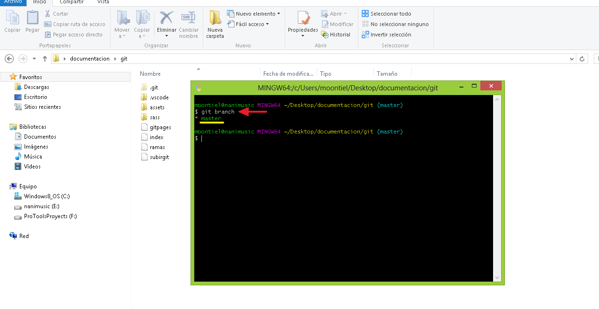
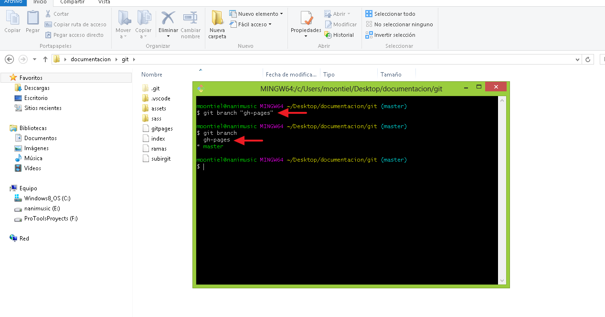
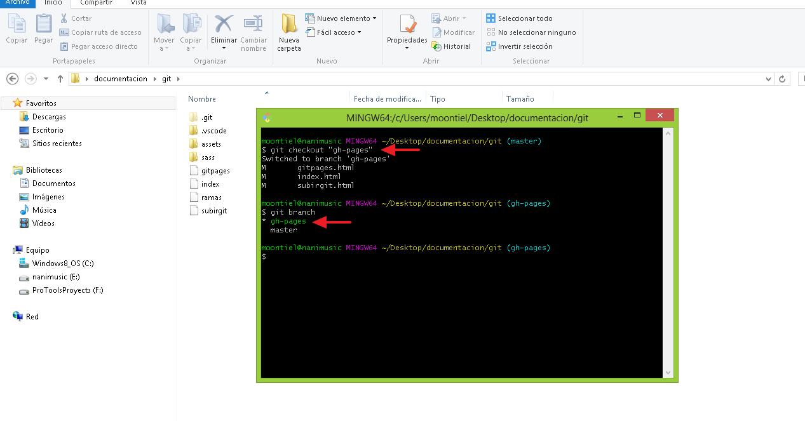
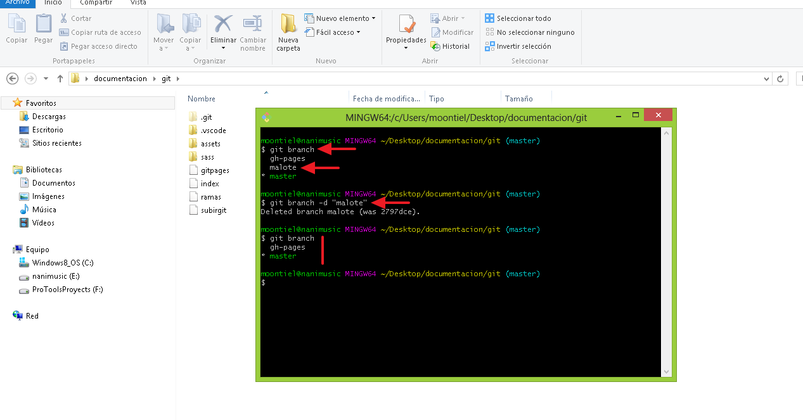
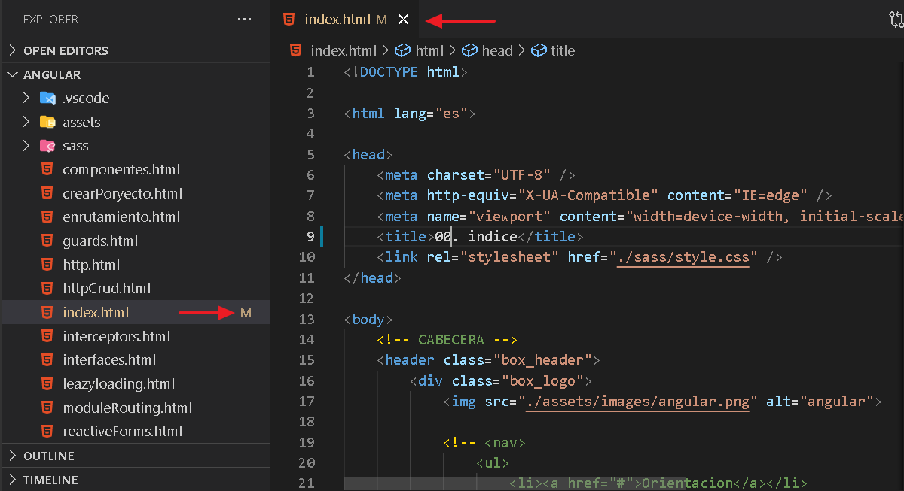
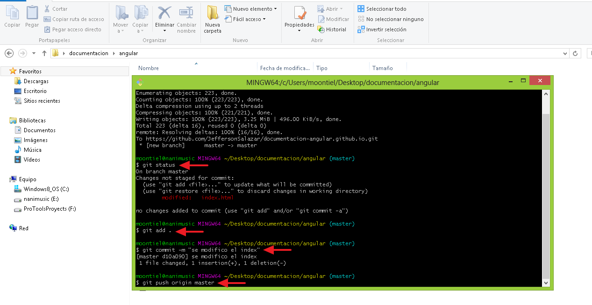
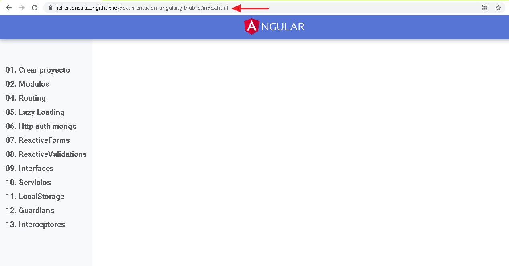

02. Ramas y Merge
En este apartado aprenderemos a crear y conocer ramas a cambiar entre ellas y como eliminar una, tambien aprenderemos a fucionar (unir) los cambios entre ramas haciendo uso de merge
01. Git branch: Conocer las ramas

02. Git branch "nombre nueva rama": Crear rama

03. Git checkout "nombre de rama": Cambiar entre ramas

04. Git branch -d "nombre de rama": Eliminar una rama

-------------------- End --------------------
01. Modificando el index.html

02. Actualizando los cambios generados

03. Visualizando la pagina

End add github pages